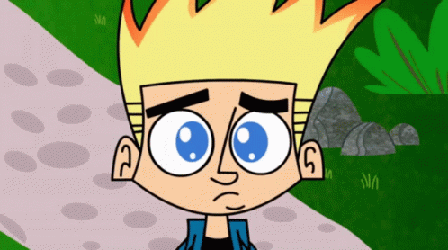
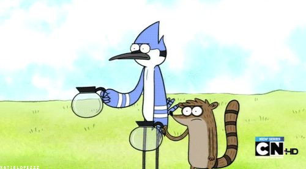
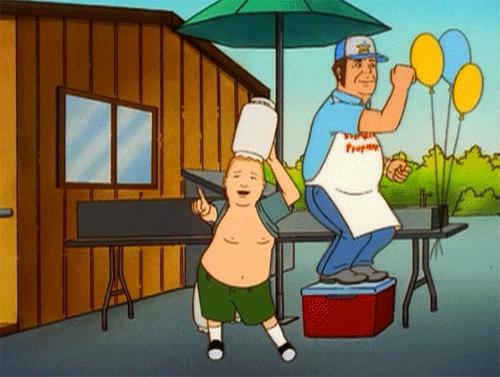
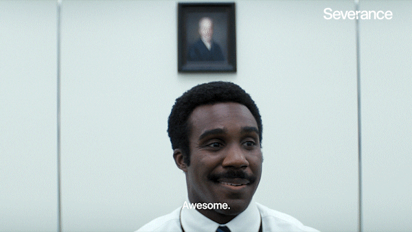

What people consume says more about them than words. What they read, eat, and listen to speaks volumes about people's childhoods and experiences. TV shows are unique in that they engage everyone of different ages, and ones that were "hot" or "fresh" had a lasting impact on viwers. Much of our childhood (and in some cases, behaviors) have been influenced by TV shows, in addition to much of Gen Z's humor. Thus, by having watched these shows during their prime, the internet's sense of community is strengthened and the shows become more than archives. They become key moments of our past, shaping our present identity.
|  | |
|---|---|
|  |  |
|  |